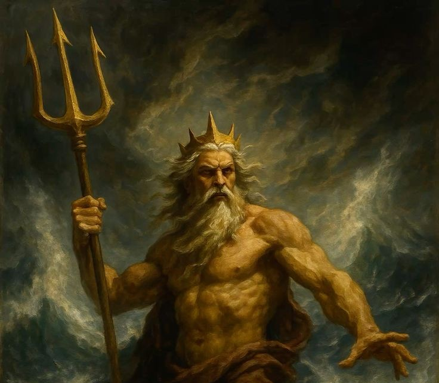
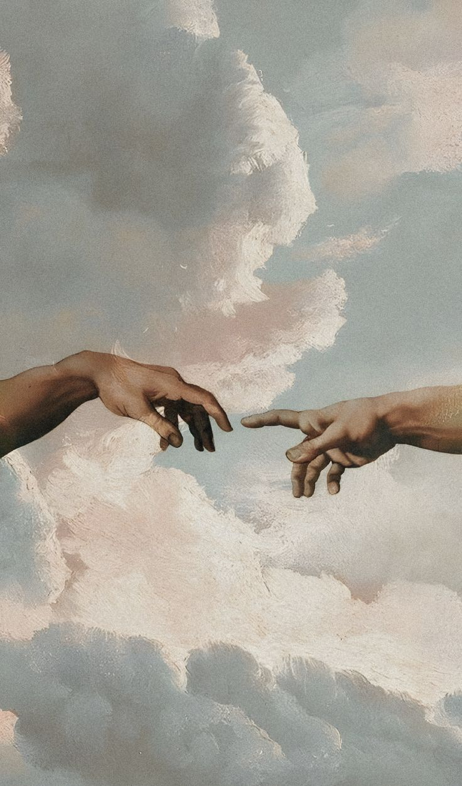
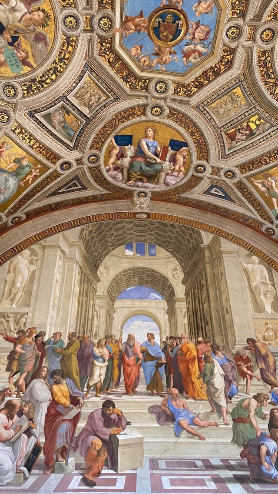
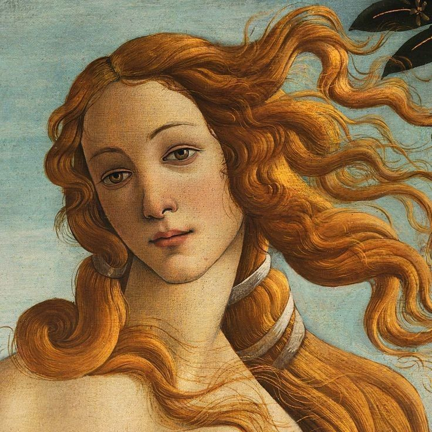
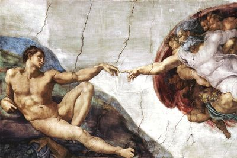

De uma tradição preservada nos dojôs de Okinawa para milhões de praticantes ao redor do planeta. A história de como o Karatê alcançou reconhecimento mundial.
O Karatê percorreu um longo caminho entre os pátios secretos de Okinawa e as arenas olímpicas. Hoje, é uma das artes marciais mais praticadas e assistidas do mundo — sem jamais perder sua alma filosófica.

O Kumite — "mãos que se encontram" — é a modalidade de combate do Karatê. Dois praticantes se enfrentam numa arena de 8×8 metros, acumulando pontos com técnicas de soco (tsuki), chute (geri) e mão aberta (uchi) executadas com precisão e controle.
No Kumite olímpico, três árbitros avaliam as técnicas em tempo real. Um soco à cabeça vale 3 pontos (ippon), socos ao tronco valem 2 (waza-ari) e chutes ao tronco valem 2 ou 3 pontos conforme a dificuldade. Velocidade, precisão e controle são mais valorizados que a força bruta.
O Kata é a "forma" — uma sequência codificada de movimentos que simula combate contra múltiplos adversários imaginários. É a biblioteca técnica do Karatê: cada kata encapsula séculos de conhecimento de combate numa coreografia precisa.
Na competição, os atletas executam o kata escolhido diante de cinco árbitros, que avaliam critérios como técnica, potência, velocidade, ritmo, equilíbrio, kime (foco) e bunkai (aplicação marcial). É frequentemente descrito como "poesia em movimento".
Existem mais de 100 katas reconhecidos entre todos os estilos. Nos Jogos Olímpicos de Tóquio 2020, cada atleta executou dois katas (um por dia), escolhidos de uma lista pré-aprovada de 102 formas.

O momento mais aguardado da história do Karatê como esporte.

HistóriaApós décadas de campanhas, o Karatê estreou nos Jogos Olímpicos de Tóquio 2020 (realizados em agosto de 2021). Foram 80 atletas competindo em Kumite (8 categorias de peso) e Kata (masculino e feminino).

Ouro · KataA espanhola Sandra Sánchez, de 39 anos, conquistou o ouro no Kata feminino — o primeiro da história olímpica do Karatê. Considerada a melhor kata-ca da sua geração, encantou o mundo com sua precisão impecável.

LegadoEmbora o Karatê não tenha sido incluído no programa de Paris 2024, a comunidade global continua forte. A WKF segue buscando a reinclusão nos Jogos de Los Angeles 2028, onde o esporte espera voltar ao seu lugar no mundo.
"Que o Karatê esteja ou não nos Jogos Olímpicos, ele permanecerá para sempre no coração de seus praticantes. Nenhuma comissão olímpica pode apagar séculos de tradição."
Primeiras campanhas para inclusão olímpica.
O COI aprova o Karatê para Tóquio 2020.
Primeiras medalhas olímpicas da história do Karatê.